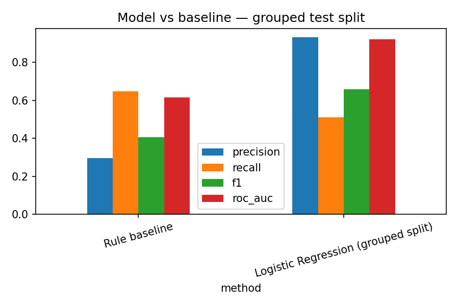
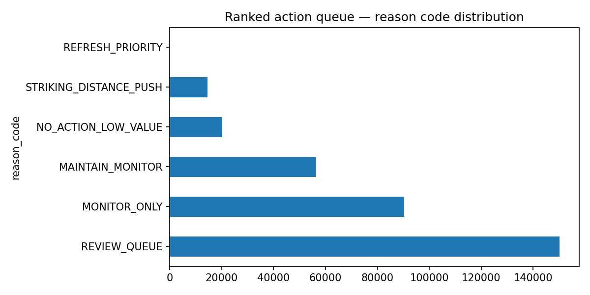
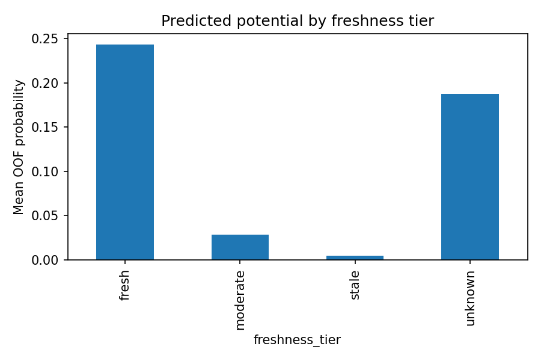

Picture a content lead staring at a spreadsheet of tens of thousands of pages, a refresh budget for maybe a few dozen this month, and no principled way to choose. Pick wrong — refresh pages that were never going to earn clicks anyway — and the budget is wasted. Pick by gut feel, and the same senior pages keep getting attention while genuinely promising content quietly decays. This is the real FlyRank content problem: 331,436 content items across a multi-brand portfolio, and no scalable way to prioritize which ones are worth a human's time this cycle.
The question this project answers: can pre-refresh signals predict next-month click activity well enough to prioritize that review, turning a flat, unmanageable backlog into a ranked queue with reasons attached — instead of a spreadsheet nobody can act on?
Source: FlyRank/internship-warehouse (Hugging Face, build v20260703),
tables fact_content_daily_performance (month=2026-03, month=2026-04) and
dim_content. Feature window: March 2026. Label window: April 2026 —
strictly the following month, so every feature is knowable before the outcome it predicts.
Excluded from this study: fact_content_query_90d (its 90-day window overlaps
the label period and was not worth the added alignment work for this pass);
fact_content_daily_performance_sample (June 2026, reserved as a sealed test
month and deliberately untouched); all months outside March–April 2026, to keep this study
to one clean past-to-future pair. 331,436 content items had a matching row
in both months and form the modeled population — essentially all of them (fewer than 5
items were dropped for lacking an April row), so survivorship bias is negligible here.
Label: did the content earn at least one click in April 2026? A binary outcome, base rate 18.7%.
Features: March search impressions, clicks, average position, GA4 sessions and engagement time, click-through rate, and days since last content update — all measured strictly before the label window.
Baseline: a transparent hand-written rule — flag content as stale (≥181 days since update) or below its position tier's expected CTR (computed from training data only, to avoid leaking test-set information into the rule).
Validation design: GroupShuffleSplit by client, 80/20 — no client appears in both train and test. A naive random 80/20 split was also run for comparison (ROC-AUC 0.920 vs. 0.920 grouped by client) — the two are nearly identical (a gap of 0.0004), which is itself a finding: in this dataset, client identity was not doing meaningful work the model could "cheat" with, so the grouped-split number can be trusted as close to the naive one, not treated as a correction of a large inflation.
Leakage checks: features and label sit in strictly non-overlapping months; no product-flag or composite-score columns were used as features; the modeled population retains essentially the full March cohort, so the survivorship filter introduces negligible bias.

| Method | Precision | Recall | F1 | ROC-AUC |
|---|---|---|---|---|
| Rule baseline | 0.295 | 0.649 | 0.406 | 0.614 |
| Logistic Regression (grouped split) | 0.931 | 0.510 | 0.659 | 0.920 |
Base rate: 18.7%. Every metric above is read against this number — a bare accuracy figure without it would overstate the model's contribution. The model shows materially higher precision than the rule baseline (0.931 vs. 0.295) at somewhat lower recall (0.510 vs. 0.649) — it flags fewer items, but is right more often when it does.


| Reason code | Count |
|---|---|
| REVIEW_QUEUE | 150,193 |
| MONITOR_ONLY | 90,292 |
| MAINTAIN_MONITOR | 56,316 |
| NO_ACTION_LOW_VALUE | 20,187 |
| STRIKING_DISTANCE_PUSH | 14,445 |
| REFRESH_PRIORITY | 3 |
81.8% of the queue is flagged for mandatory human review before any suggestion reaches an editor. Every row is decision-support, not an instruction: an editor confirms page content, voice, and compliance before acting. Nothing in this queue should trigger auto-publishing, auto-deprioritization of budget, client-facing performance guarantees, or individual writer evaluation.
Full pipeline, notebooks, and this page's generator script:
https://github.com/titlyzaman25/flyrank-internship. Relevant notebooks:
work/notebooks/w05_model.ipynb,
work/notebooks/w06_validation_audit.ipynb,
work/notebooks/w07_action_playbook.ipynb,
work/notebooks/capstone.ipynb. Random seed: 42, fixed across every split and
model in this study.